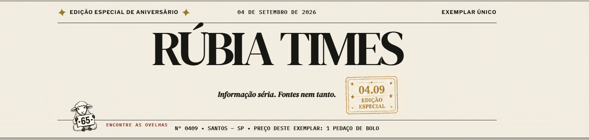
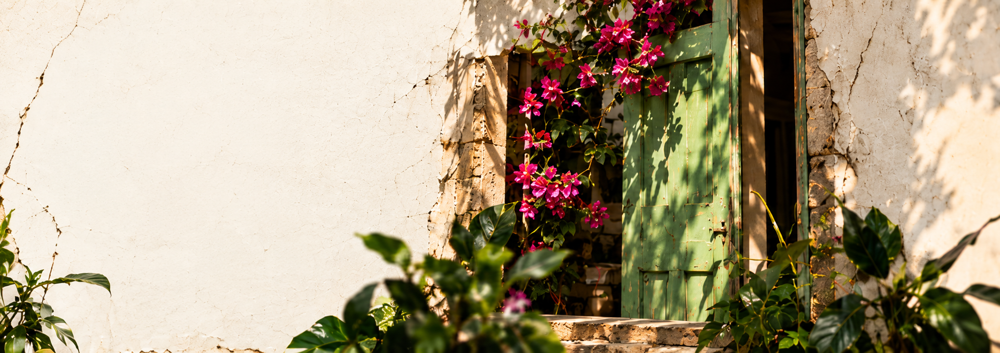
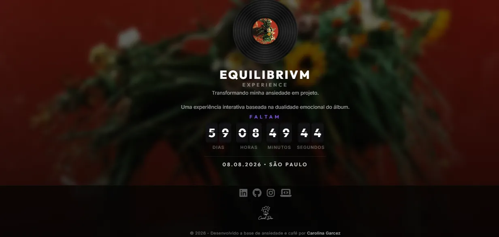
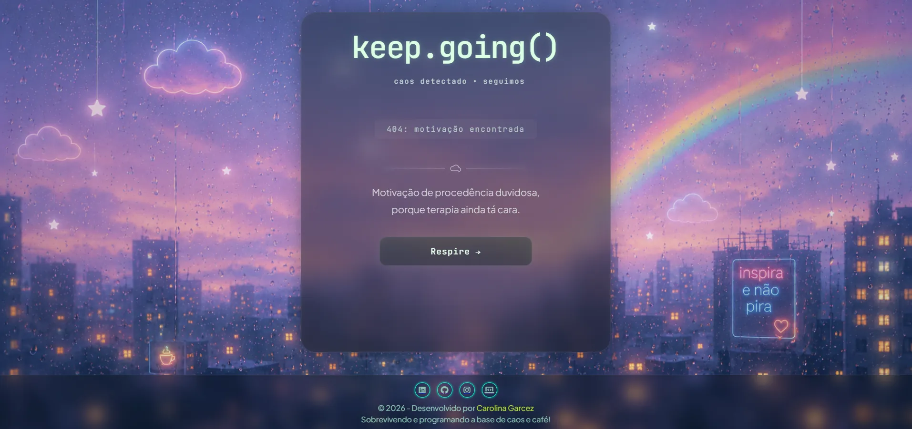
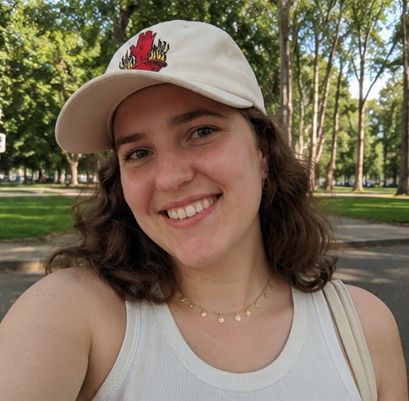

Rúbia Times
Porque algumas histórias não cabem em um cartão de aniversário. Então eu fiz um jornal inteiro.
Ver projeto

A Vira Mato é um estúdio criativo que combina direção criativa, design, comunicação e tecnologia.
Criei este espaço para experimentar, desenvolver projetos, testar possibilidades e transformar ideias em experiências digitais.
Mais do que mostrar trabalhos prontos, quero mostrar também o que existe entre a ideia e o resultado: processo, escolhas, tentativas, aprendizados e evolução.

Vira Mato não é sobre plantas.
É sobre crescimento.
A planta representa a ideia.
A raiz representa aquilo que sustenta.
Porque as ideias não precisam nascer prontas.
Elas precisam encontrar espaço para crescer.
Projetos onde exploro diferentes maneiras de unir ideia, estrutura, design e tecnologia. Cada um nasceu de um contexto diferente — e encontrou seu próprio caminho.

Porque algumas histórias não cabem em um cartão de aniversário. Então eu fiz um jornal inteiro.
Ver projeto
Uma experiência digital inspirada na expectativa pela chegada da turnê do álbum Equilibrivm, da cantora Anitta.
Ver projeto
Em constante movimento.
Trabalho entre design e tecnologia para transformar ideias em experiências digitais com intenção, estrutura e identidade.
Interfaces e páginas digitais com estrutura clara, identidade própria e atenção à experiência de quem usa.
Conteúdo e linguagem para apresentar ideias, projetos e marcas com clareza e intenção nos meios digitais.
Construção de linguagem visual e direção aplicada a projetos digitais, mantendo conceito, identidade e comunicação trabalhando juntos.
ideia boa não precisa caber em uma caixinha.

Sou designer de produto digital, desenvolvedora front-end e trabalho também com direção de arte.
Criei a Vira Mato para reunir essas partes do meu trabalho em um mesmo lugar: meus projetos, experimentos, processos e tudo aquilo que ainda estou aprendendo e construindo.
É meu portfólio, meu laboratório e um espaço para ideias crescerem.
Carolina GarcezProduto Digital · Front-end · Direção de Arte
sim, eu também fiz esse site. :)
Projeto, parceria, trabalho ou só uma boa conversa. A porta está aberta.
Vamos conversar